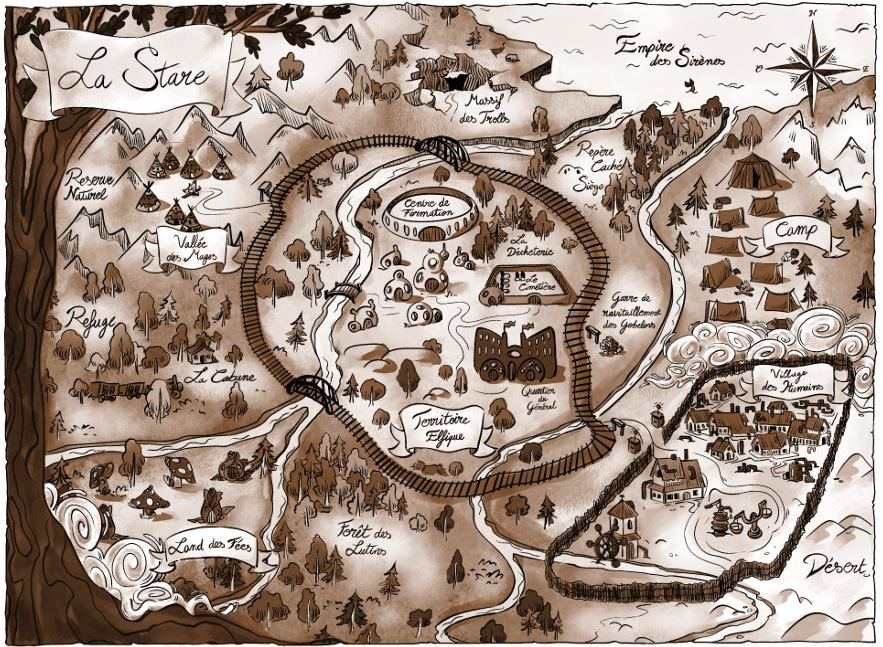

Univers de la Stare
La Stare est une île-monde isolée par des frontières qu’aucun habitant n’a jamais franchies. Les vocations y sont strictement réparties : un peuple pour combattre, un pour soigner, un pour gérer les ressources, un pour garder les secrets et un pour inventer. Sous cette organisation rigide se cachent pourtant des massacres, des phénix renaissants et des vérités soigneusement étouffées.
Carte de la Stare
Une vue d’ensemble de l’île, de ses frontières et des zones réservées à chaque vocation. Idéale pour suivre les déplacements des personnages au fil du roman.
Les elfes forment la force armée officielle de la Stare. Entraînés dès l’enfance, ils apprennent à obéir aux ordres du Conseil et à tenir la ligne quoi qu’il en coûte. Les missions qu’on leur confie les placent souvent face à des civils, et certains – comme Cydia – commencent à douter du bien-fondé de cette obéissance aveugle. [file:21]
Les fées sont les guérisseuses du monde : elles recousent les chairs, apaisent les traumatismes et prennent en charge ceux que les décisions politiques brisent. Même lorsqu’elles réparent les dégâts causés par l’armée, on attend d’elles qu’elles se taisent. Leur magie a un prix, et leurs doutes aussi. [file:21]
Les gnomes administrent les ressources, les stocks et les infrastructures. Une ancienne guerre les a laissés avec la réputation de vouloir tout contrôler, et certaines légendes les accusent d’avoir tenté de soumettre les autres peuples par la violence. Depuis, ils jonglent entre culpabilité héritée et besoin de stabilité. [file:21]
Les mages sont les gardiens des rites, des prophéties et de la mémoire. Ils recueillent les enfants marqués par la magie, comme Licya, et entretiennent une relation particulière avec les phénix de la Stare. Ils savent des choses que le reste du monde ignore – notamment sur la véritable nature de l’« auteur ». [file:21]
Les humains n’ont pas la puissance magique brute des autres peuples, mais compensent par leur ingéniosité. Ils conçoivent prothèses, artefacts et systèmes qui soutiennent le quotidien. Leur créativité peut autant servir le contrôle du Conseil que nourrir les révoltes en secret. [file:21]